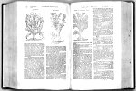

Rembert Dodoens. Cruydt-boeck, volgens syne laetste verbeteringe. Met biivoegsels [...]. Leyden, in de Plantijnsche druckerije van François van Ravelingen, 1608. -- (659 A 7)
De eerste zevenenvijftig jaar van Rembert Dodoens’ leven speelden zich af in een klein gebied. Hij werd in 1517 in Mechelen, waar zijn vader stadsarts was, geboren en liet zich op dertienjarige leeftijd als student in Leuven inschrijven. (Mechelen en Leuven liggen zo’n vijfentwintig kilometer van elkaar af.) Daar studeerde hij kosmografie bij Gemma Frisius (zijn eerste publicatie zou op dat gebied liggen) en medicijnen. In 1535 promoveerde hij in de medicijnen en van 1541 tot 1575 vervulde hij dezelfde functie als zijn vader tot zijn dood in 1533 had gedaan. Een verzoek om hoogleraar medicijnen in Leuven te worden sloeg hij af, net zo min als hij, in 1578, op het aanbod inging om naar Madrid te komen als lijfarts van Filips II, een functie die ook Andreas Vesalius (zie nummer 71) had bekleed. Wel was hij van 1574 tot 1577 als zodanig werkzaam geweest in Praag en Wenen bij keizer Maximiliaan. In de veelbewogen beginjaren van de Tachtigjarige Oorlog waren rampen hem niet bespaard gebleven: zijn bezittingen was hij grotendeels kwijtgeraakt na de inname van Mechelen in 1572 door de Spanjaarden. Van 1578 tot 1581 verbleef Dodoens als religieus balling in Keulen, en het volgende jaar was hij in Antwerpen bij de drukker Christoffel Plantijn om de productie van de nieuwe uitgave van zijn kruidboek te begeleiden, die in 1583 verscheen. Inmiddels was hij in 1582 tot hoogleraar in de medicijnen te Leiden benoemd en daar overleed hij drie jaar later, in 1585.
Van zijn publicaties, hoofdzakelijk op het grensgebied van de medicijnen en de botanie, die Dodoens als een hulpwetenschap van de medicijnen beschouwde, werd zijn kruidboek het meest bekend. Een eerste uitgave daarvan was in 1554 bij de Antwerpse drukker Jan van Loo verschenen, maar de totaal nieuwe druk van 1583, gebaseerd op kleinere deelstudies, verschenen tussen 1563 en 1574, werd voor lange tijd het standaardwerk op dit gebied. Eerst verscheen de Latijnse uitgave onder de titel Stirpium historiae pemptades sex, sive libri XXX. De systematiek van de planten is ten opzichte van de uitgave 1554 sterk verbeterd en bestaat nu uit zesentwintig groepen. Het boek bevat meer dan duizend afbeeldingen in houtsnede. De blokken hiervoor waren grotendeels dezelfde als die Van Loo gebruikt had: Plantijn had ze in 1581 van zijn weduwe gekocht. Daarbij kwamen nog de blokken die Plantijn al in eerdere publicaties, zowel van Dodoens als van Carolus Clusius en Matthias Lobelius, had gebruikt, en ten slotte werden er nog enkele nieuwe bijgesneden. Dodoens heeft nog verbeteringen op de tekst nagelaten en deze werden in de Nederlandstalige uitgave van 1608 (herdrukt in 1618 en 1644) verwerkt. Ook bevat deze vertaling de aanvullingen en verbeteringen van Joost van Ravelingen, een kleinzoon van Plantijn, broer van de drukker Francois en een bekwaam medicus en arts. (Het handschrift daarvan berust in de bibliotheek onder signatuur BPL 948-949.) Voor de productie van het boek werden de houtblokken van de Antwerpse tak van de drukkerij geleend; de gravure voor de titelpagina werd verzorgd door de bekende Leidse kunstenaar Willem Swanenburgh (1580-1612).
De Latijnse uitgave werd in 1616 in Antwerpen herdrukt. Ter vergelijking met het boek van Fuchs (nummer 98), van wie Dodoens vaak sterk afhankelijk is, zijn ook hier afbeeldingen van diverse koolsoorten getoond.
Literatuur
- P.J. Van Meersch, Recherches historiques et critiques sur la vie et les ouvrages de Rembert Dodoens (Dodonaeus). Malines 1841.
- Claus Nissen, Die zoologische Buchillustration. Ihre Geschichte und Bibliographie. Stuttgart 1969-1978. 2 dln, nr. 519.
- Luister en rampspoed van Mechelen ten tijde van Rembert Dodoens, 1585-1985. Mechelen 1985.
| vorige pagina | top pagina |